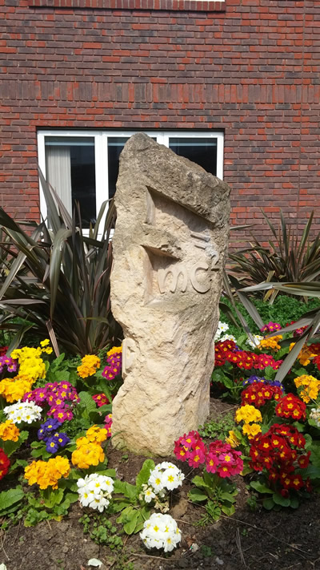

Scott is fascinated with contrasts between finished surface texture and raw quarried stone. This sculpture represents the Einstein theory 1905 AD Carved into Jurassic limestone 150-200,000,000 BC.
It encapsulates an intellectual energy releasing from the unrefined mass. On the back it reads: 'The mass of an object warps the geometry of space time surrounding it.'
See his work at www.scottformest.co.uk.